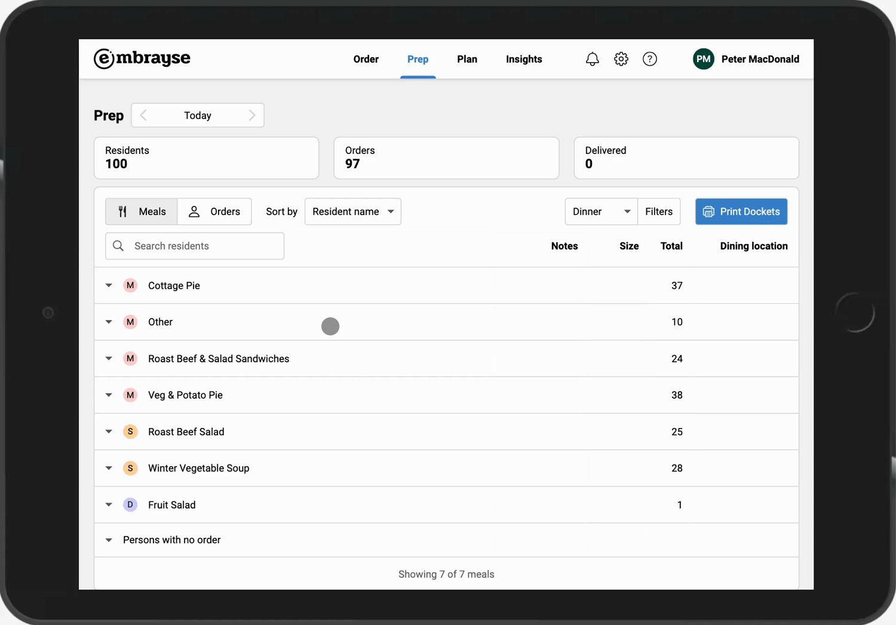
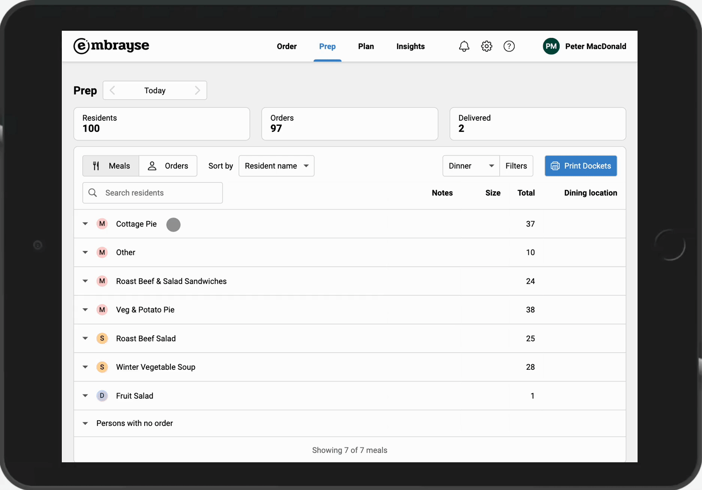
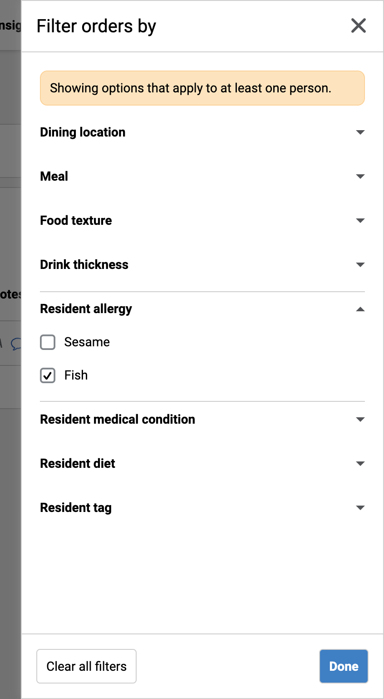
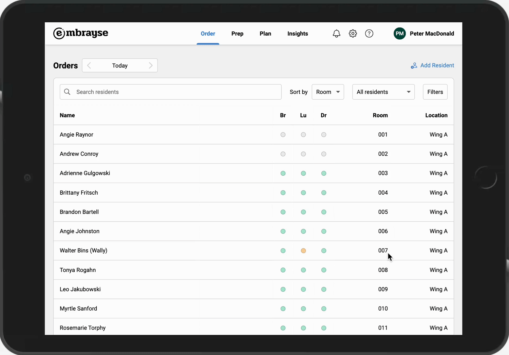

Release 2023.1 – Delivery status, improved prep report, and much more
Delivery Status
Meal service in an aged care home is often time sensitive and very busy. The last thing you'd want to happen is to miss a resident's meal. That's why Embrayse now allows you to check-off orders when they are delivered to residents. A tally of delivered orders at the top of the prep report helps you to see the status for the whole facility at a glance. You can even capture a note, for example if the resident refused to eat, so that it can be referred to and addressed in the future as needed.

Search residents by name on prep report
You can now quickly search for a resident by any part of their name in the prep report. The search feature works both when viewing Meals or Orders. This is especially useful when you want to quickly find a person's order for plating, or need to check their dietary information.

All residents shown on prep report
There are instances when due to time constraints or by mistake, some residents' orders may not have been collected in time. To make sure no one is unintentionally missed, the prep report now shows all residents regardless of whether or not they had placed an order. This applies even when filters are enabled. For example filtering by Pureed food texture will show all residents on a pureed diet, even if they don't have an order placed.
More prep report filters
In addition to the existing filters, you can now filter the prep report by residents' allergies, medical conditions, and diets. To simplify things, you will only see options that apply to at least one resident at your residence.

Finding missing orders
It's now easier to quickly find residents who are missing an order for a specific meal service, using the dropdown on the order list screen.

Content manager role and TV posters
The new Content Manager role allows users, such as your lifestyle team, to be able to upload images for display on the TV without having full administrator privileges. Examples of images (or posters) might be upcoming events or holidays, information for residents, or just fun photos. Posters are displayed periodically along with the menu on your configured TV(s).
Other Improvements and Bug Fixes
- The Other / Special Requests menu item now allows you to add a note inline with its selection, making it quicker to collect the order.
- The prep report is now much quicker when changing filters or sorting.
- The prep report shows more clearly if a resident has requested a different food texture than their usual.
- On the prep report, notes / instructions for an order item are now displayed before any texture modifications or tags.
- When navigating from the order list to an individual's order page, the date that's being viewed is now carried over, instead of reverting to today.
- Red meat has been added as an allergen.
- Administrators can now completely remove users from the system (previously you could only remove all user roles, which is functionally the same, but the user's name would still appear in the list).
- General cosmetic / UI improvements.
- Fixed: When using the app after a day of inactivity, it takes a long time and a few browser redirections before the user is signed in again.
- Fixed: Line breaks in resident dietary notes now display correctly on their profile.
- Fixed: On certain dates (e.g. 28th Feb), the date dropdown on the Insights screens shows incorrect information.
Want to see Embrayse in action?